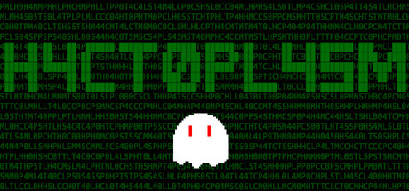
H4CT0PL45M is a 2D platformer I helped to develop and publish on Steam. I reworked the game's theming, created many of its levels and pixel art, and composed much of its soundtrack, implementing everything in Unity with C#. Below are the trailer for the game, a few screenshots, and the two tracks I composed!
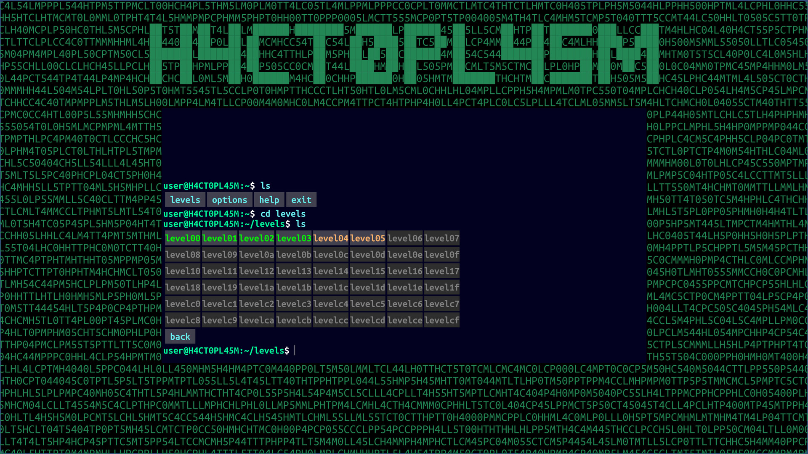
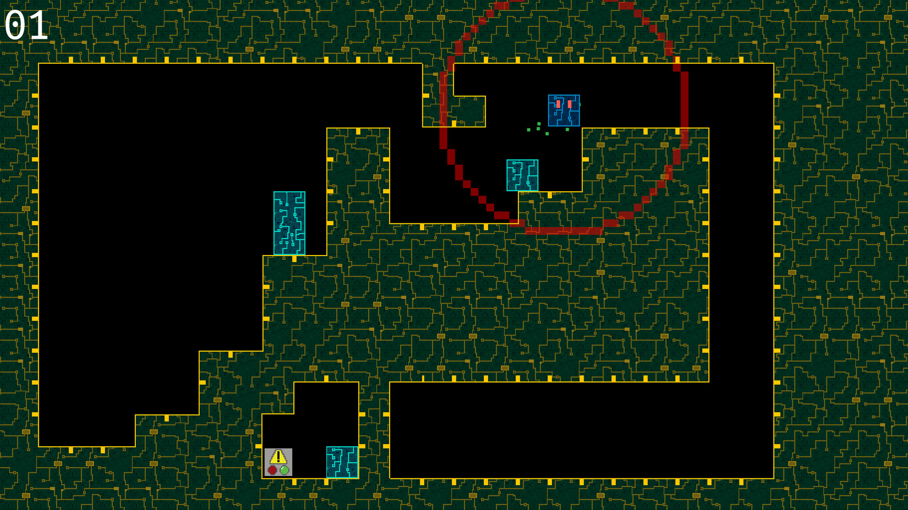
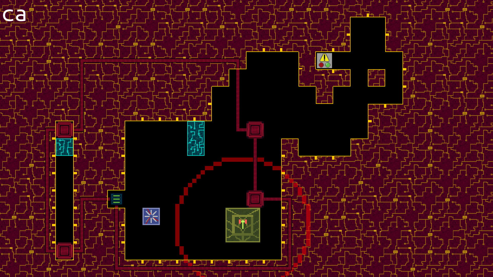
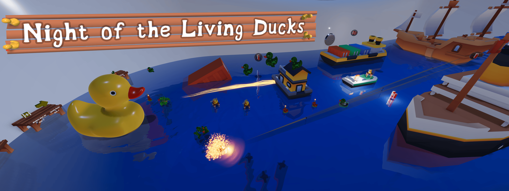
Night of the Living Ducks is a 3D co-op game I built in six weeks with a team of four peers and two freelancers. I worked on UI, menus, sounds, collectibles, and marketing, while also helping keep the team organized and our C# codebase clean and cohesive. I also helped to bring on both freelancers, as well as work with them to make our trailer and soundtrack, both of which I am incredibly proud of.
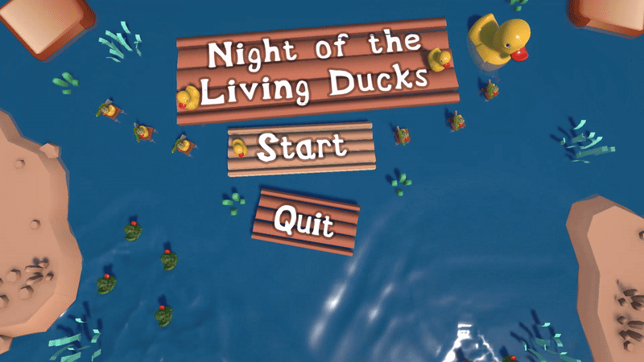
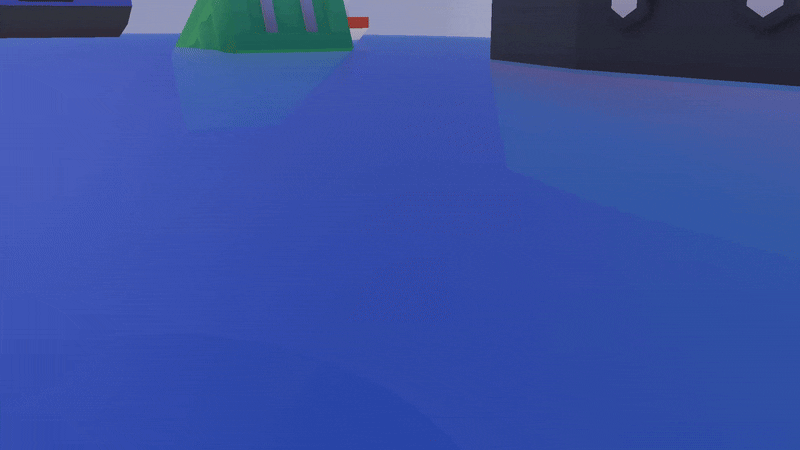
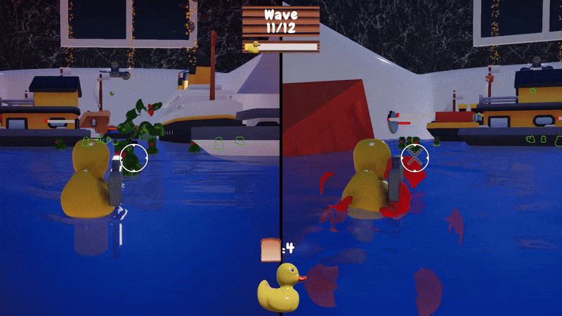
Color Shifter
Color Shifter is a solo puzzle platformer I built in two weeks — my first game developed entirely on my own. Beyond deepening my fluency with Unity and C#, the project taught me how to design a game from the ground up. By leaning into C#'s event system, I kept the codebase modular and readable while still delivering mechanics that felt interesting and engaging. Also, I'm very happy with how my experiments into visuals turned out.
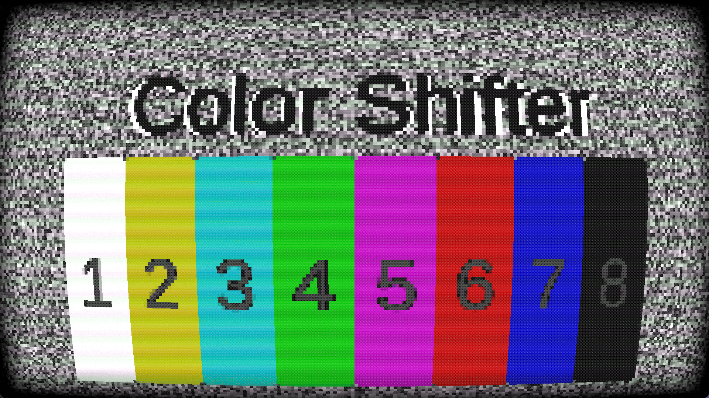

Recreating the Legend of Zelda (1986)
The Legend of Zelda (1986) Dungeon Remake was my first proper Unity project — a faithful recreation of the original Legend of Zelda's opening dungeon, complete with a custom mini-dungeon built on top. Over four weeks, my partner and I divided our strengths effectively: I took ownership of the UI, sprites, sound effects, music, and the overall look and feel of the game. Our standout feature was a mechanic allowing seamless transitions between classic 2D and first-person 3D — ambitious for a first game, but one we pulled off and are genuinely proud of.
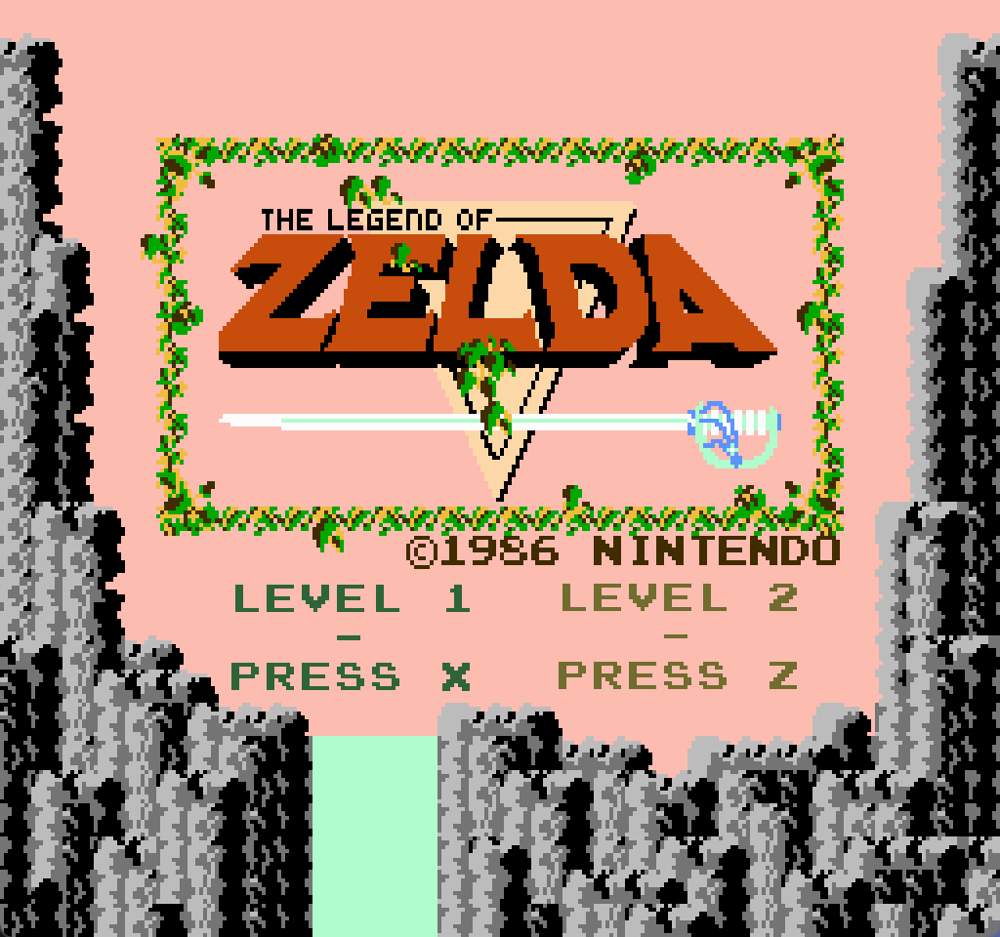
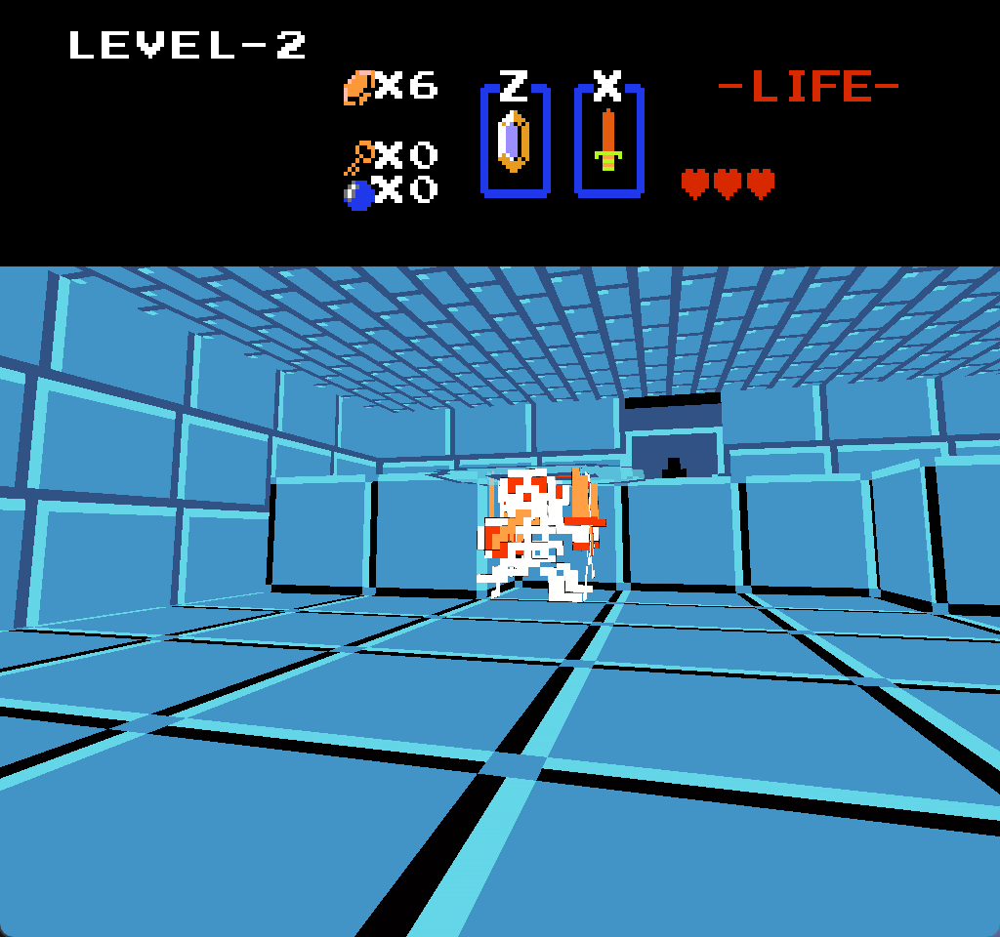
Lab Ratz
Lab Ratz is a very basic game prototype I made to implement 3D modeling and animations in Unity. I modeled all characters and their animations, as well as almost every other element in the game. The below video is my walkthrough, in which I play through Lab Ratz and give my in-depth thoughts on my design process and decisions. My models and their animations are also available on Sketchfab, linked at the bar at the bottom of this screen.